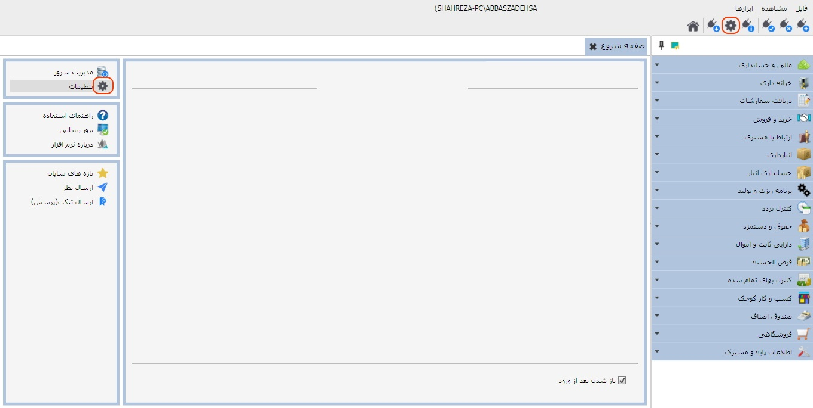
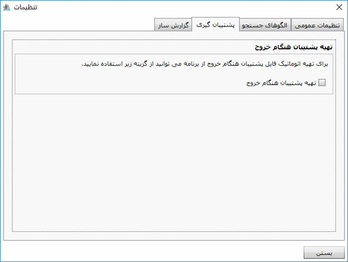

در نرم افزار سایان صفحه ی تنظیمات از قسمت های مختلفی در دسترس است که در تصویر زیر با کادر قرمز رنگ مشخص شده است:
با کلیک روی کلید هایی که در تصویر بالا مشخص شده است صفحه تنظیمات نمایش داده می شود که شامل چهار تب می باشد. داخل هر یک از این تب ها توضیحات مربوط به هر یک از تنظیمات وجود دارد که می توانید آنها را متناسب با نیاز خود انجام دهید. تصاویر مربوط به هر تب را در ادامه مشاهده می کنید:

در تب تنظیمات عمومی می توانید نوع تقویم و فونت نرم افزار را به دلخواه انتخاب کنید. همچنین شما می توانید تعیین کنید که در ابتدای نام اشخاص حقیقی کلمه آقا یا خانم قرار گیرد یا خیر.

در تب الگوهای جستجو می توانید برای کالاها و اشخاصی که در نرم افزار تعریف شده اند با استفاده از کلمات کلیدی که در این قسمت قرار داده شده است الگوی نمایش و جستجو تعیین نمایید.
در دو تب پشتیبان گیری و گزارش ساز نیز توضیحات لازم قرار داده شده است که می توانید بر اساس آن ها تنظیمات لازم را در این دو قسمت انجام دهید.

 توجه داشته باشید که بعد از فعال سازی گزینه ی مرکز
گزارش باید مسیر مرکز گزارش را تعیین کنید و بعد از تعیین مسیر، سیستم فقط
گزارش هایی که در مسیر تعیین شده موجود هستند را نمایش می دهد.
توجه داشته باشید که بعد از فعال سازی گزینه ی مرکز
گزارش باید مسیر مرکز گزارش را تعیین کنید و بعد از تعیین مسیر، سیستم فقط
گزارش هایی که در مسیر تعیین شده موجود هستند را نمایش می دهد.